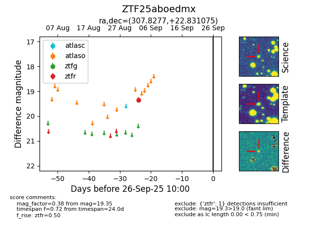

FINK: ZTF25aboedmx
Lasair: ZTF25aboedmx
ALeRCE: ZTF25aboedmx
ZTF25aboedmx (ztf,fink)
equatorial (ra, dec) = (307.8277,+22.83108)
galactic (l, b) = (64.9634,-9.74801)

last ztfr=19.35
1 ztfr detections